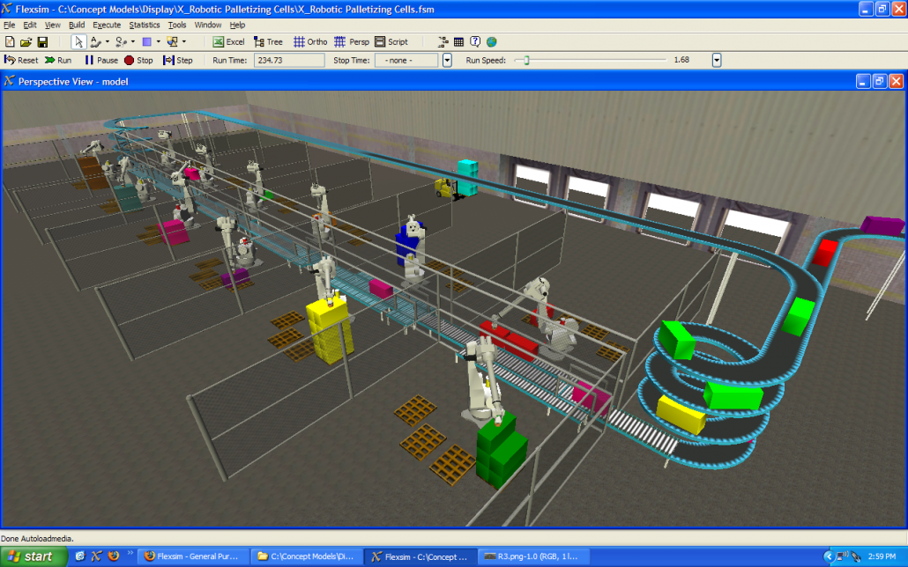
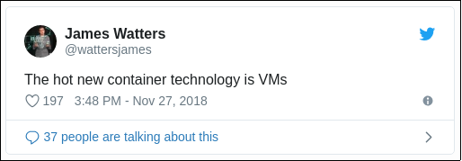

Truly understainding container
이어형
Me: 어형부형
KT: openstack 기반 public storage 서비스 개발,운영
Kakao: openstack 기반 private cloud 서비스 개발,운영
현재 Line: kubernetes 기반 private cloud native 서비스 개발,운영
주제
컨테이너란 무엇인가 다시 생각해보고
컨테이너의 한계라고 여겨지는 것들에 대해
해결할 수 있는 방법들을 살펴보며
이로 향후 컨테이너의 나아갈 방향을 생각해봅니다.
Container와 Virtual machine은 비교대상인가?
Container and Virtual Machine의 같은점
사용자의 workload를 처리
그렇다면 다른 점은?
구조?

Container vs Virtual Machine
성능?
Container vs Virtual Machine - IOPS
image from An Updated Performance Comparison of Virtual Machines and Linux Containers
성능이 떨어지는 이유는 구조 때문인가?
Container vs Virtual Machine - virtio
image from An Updated Performance Comparison of Virtual Machines and Linux Containers
virtio, QEMU의 존재 이유?
emulation - 본뜸
emulation
장점: 호환성을 제공하여 종래의 것을
그대로 치환(or 이전)가능함
단점: 모방하기 위한 비용(성능 등)이 큼
그러면 container는?
최초에는 isolation만이 고려
emulation의 오버헤드 없이 사용하고자 했음
os container로 시작
VM이 hardware virtualization이라면
container는 os virtualization 라고 했던 시절이..
os container vs app container

app container를 한마디로 한다면?

simulation - 모의실험
그러면 왜 simulation 이라 하는가?
결과를 예측가능하게 만들기 위해서
재사용성을 높인다.
이 과정에서 최적화가 가능
== 컨테이너 특성과 유사
그러면 무엇에 대한 simulation인가?
physical machine이 아닌 process
그러면 무엇으로 simlation을 제어하는가?
cgroup과 namespace
cgroup과 namespace
cgroup: control group, resource(memory, cpu, …)을 관리하기 위한 기술
namespace: 논리적인 독립공간을 제공하기 위한 기술
namespace 종류
mnt : mount
uts : hostname
ipc : SystemV IPC
pid : process
net : network
uid : user ID
time , syslog namespace not exist
namespace의 의미
어디에서나 해당 namespace의 내용이
유지되거나 조작가능하여 재사용성을 높임
어떻게 namespace를 생성하는가?
unshare - disassociate parts of the process execution context
$ # 이미지 추출
$ docker export blissful_goldstine -o dockercontainer.tar
$ mkdir rootfs
$ tar xf dockercontainer.tar --ignore-command-error -C rootfs/
$ # container 생성
$ unshare --mount --uts --ipc --net --pid --user \
--fork --map-root-user chroot $PWD/rootfs ash
root:# mount -t proc none /proc
root:# mount -t sysfs none /sys
root:# mount -t tmpfs none /tmp이를 이용해서 컨테이너 생성 가능
image from how-to-run-docker-containers-using-common-linux-tools-without-docker
다만 아직 남은게 있음
아직 사용량제어를 하지 않음
그래서 여기에 cgroup을 적용해야 함
이런 과정을 조금 쉽게 쓸 수 있게 한다면
runc를 사용
OCI 스펙(runtime spec, image spec)에 따라
컨테이너 생성 및 실행을위한 CLI 도구
runc
$ docker run --name node4 mhart/alpine-node:4 node
$ docker export node4 > rootfs.tar
$ mkdir -p ./rootfs
$ tar -xf rootfs.tar -C ./rootfs
$ runc spec
$ sudo runc start node4_repl
/ # node
> process.version
'v4.4.1'
> binary가 아닌 code에서 직접 이용
libcontainer를 이용
native Go 로 namespace, cgroups, capabilities, filesystem access controls를 사용하여 컨테이너를 만들기 위한 라이브러리
마지막으로 일반적인 container라면
network을 외부 연결해줘야 함
현재의 network는 갇힌 외부로 연결이 불가능한 상태
그래서 namespace를 가로지르는 통신방법이 필요
veth: virtual ethernet
pair로 존재하며 다른 namespace에 동일하게 존재하여
한 pair로 들어온 트래픽은 다른 pair의 veth로 복사됨
image from Container Namespaces – Deep Dive into Container Networking
veth: command
$ sudo brctl addbr runc0
$ sudo ip link set runc0 up
$ sudo ip addr add 192.168.10.1/24 dev runc0
$ sudo ip link add name veth-host type veth peer name veth-guest
$ sudo ip link set veth-host up
$ sudo brctl addif runc0 veth-host
$ sudo ip netns add runc
$ sudo ip link set veth-guest netns runc
$ sudo ip netns exec runc ip link set veth-guest name eth1
$ sudo ip netns exec runc ip addr add 192.168.10.101/24 dev eth1
$ sudo ip netns exec runc ip link set eth1 up
$ sudo ip netns exec runc ip route add default via 192.168.10.1또 하나의 중요한 키워드인 최적화된 방법이란?
예 - IP 할당
| virtaul machine | container | |
|---|---|---|
| 예(IP할당) | 실제 dhcp를 L2 layer로 broadcasting 한 후에 결과로 IP를 받음 | dhcp를 사용하지 않고 container의 가상의 interface에 IP를 부여 |
| 의미 | dhcp를 그대로 사용가능하여 physical machine등도 같이 사용가능 | IP를 dhcp가 아닌 다른 방법으로 관리가 필요해짐 |
예 - container에게 restart가 필요한가?
kubernetes엔 container의 restart가 없음
왜 없을까?
결국 최적화된 방법들의 등장으로
기존의 프로세스에 익숙하던 유저들도 새롭게 배워야하는 비용이 있음
정리
Virtual machine vs container 목표
- VM: physical machine의 기능을 최대한 닮게 소프트웨어로 구현
- app container: process가 해야하는 목표를 재현율을 높이며 최적화된 방법을 소프트웨어로 구현
결국 physical machine 과 process의 차이
결국 emulation 과 simulation의 차이
결국
이전보다 더 좁은 scope(PM -> process)로
보다 목표 중심적으로 사고를 할 수 있게 됨
container를 사용하면서 기존의 방식을
재정의하여 최적화 한 방법들이 나타남
이는 cloud native로 연결됨
container의 한계
docker와 container와의 관계
OLD: docker is container
NEW: docker is container platform
docker의 문제
unregister netdevice error
아직까지 해결되지 않은
커널 패닉을 유발하는 문제가 존재
from kernel-crash-after-unregister_netdevice-waiting-for-lo-to-become-free-usage-count-3
docker daemon에 종속성이 있음
docker restart시 컨테이너에 영향
docker socket이 죽을 시 컨테이너에 영향
한계 #1
너무 많은 기능을 가지고 있는
docker daemon의 종속성으로
한번에 노드가 망가지기가 쉽다.
우선 그러면 docker는 대체 가능 한가?
runtimes
kubernetes container runtime interface
docker 없이 container를 사용하기 위한 interface들이 제공됨
예: containerd를 사용하면
daemon을 restart 해도 기존 container들에 영향이 없음
containerd
단순성, 견고성, 휴대성을 중시한
산업 표준 container runtime
containerd performance
다만 새로운 runtime들을 사용시
대부분 이름 그대로 runtime만 가지고 있음
build는 별도
그렇다면 build는?
build tools
buildkit
동시성, 캐시 효율성 이 있으며
Dockerfile에 구속받지않는 빌더 툴킷
from Building Efficient Docker Container Images with BuildKit
결론
새로운 runtime을 사용하면
buildtime, runtime을 구분 함
이를 통해 container service에서는
오직 runtime만 사용하여 보안성, 안정성 및 성능 향상
한계 #2
docker는 root만이 해당 OS에 설치가능
취약점 발생시 OS레벨
문제 일으킬 가능성들이 존재함
rootless container
root 권한이없는 사용자가
컨테이너를 작성, 실행 및 관리 할 수있음
이런건 rootless container가 아님
docker run --user foo- Dockerfile 안에
USER usermod -aG docker foosudo dockerorchmod +s dockerddockerd --userns-remap
vs rootless

이미 libcontainer에 들어가있음
runc등 다양한 곳에서 사용가능
하지만 좀 더 대중적인 툴은
podman
Podman linux 시스템에서 OCI 컨테이너를
개발, 관리 및 실행하기 위한 데몬이 없는 컨테이너 엔진
alias docker=podman.
데몬 없는 podman
podman 커맨드가 직접 linux에 접근해서 모든것을 실행
binctr
실행 가능한 바이너리로서 완전 정적이고
root 권한없이도 실행가능한 독립적 인 컨테이너.
binctr 예
과정
주요 코드
...
func init() {
// Parse flags
flag.StringVar(&containerID, "id", "kakaotalk", "container ID")
flag.StringVar(&root, "root", defaultRoot, "root directory of container state, should be tmpfs")
flag.Usage = func() {
flag.PrintDefaults()
}
flag.Parse()
}
//go:generate go run generate.go
func main() {
if len(os.Args) > 1 && os.Args[1] == "init" {
runInit()
return
}
dir := os.Getenv("HOME") + "/.kwine"
if _, err := os.Stat(dir); os.IsNotExist(err) {
err = os.MkdirAll(dir, 0755)
if err != nil {
panic(err)
}
}
// Create a new container spec with the following options.
opts := container.SpecOpts{
Rootless: false,
Terminal: false,
Args: []string{
"/usr/local/bin/entrypoint.sh",
},
Env: []string{
"LANG=ko_KR.UTF-8",
"LANGUAGE=ko_KR.UTF-8",
"GTK_IM_MODULE=uim",
"XMODIFIERS=@im=uim",
"QT_IM_MODULE=uim",
"DISPLAY=unix:0",
"PULSE_SERVER=tcp:127.0.0.1:4713",
"PATH=/usr/local/sbin:/usr/local/bin:/usr/sbin:/usr/bin:/sbin:/bin",
},
Mounts: []specs.Mount{
{
Destination: "/etc/localtime",
Type: "bind",
Source: "/etc/localtime",
Options: []string{"ro", "rbind", "rprivate"},
},
{
Destination: "/tmp/.X11-unix",
Type: "bind",
Source: "/tmp/.X11-unix",
Options: []string{"rw", "rbind", "rprivate"},
},
{
Destination: "/root/.wine",
Type: "bind",
Source: dir,
Options: []string{"rw", "rbind", "rprivate"},
},
},
}
spec := container.Spec(opts)
// Initialize the container object.
c := &container.Container{
ID: containerID,
Spec: spec,
Root: root,
Rootless: false,
Detach: false,
NoPivotRoot: true,
UseSystemdCgroup: false,
HostNetwork: true,
ShareIPC: true,
}
// Unpack the rootfs.
if err := c.UnpackRootfs(defaultRootfsDir, Asset); err != nil {
logrus.Fatal(err)
}
// Run the container.
status, err := c.Run()
if err != nil {
logrus.Fatal(err)
}
// Remove the rootfs after the container has exited.
if err := os.RemoveAll(defaultRootfsDir); err != nil {
logrus.Warnf("removing rootfs failed: %v", err)
}
// Exit with the container's exit status.
os.Exit(status)
}
func runInit() {
runtime.GOMAXPROCS(1)
runtime.LockOSThread()
factory, _ := libcontainer.New("")
if err := factory.StartInitialization(); err != nil {
// as the error is sent back to the parent there is no need to log
// or write it to stderr because the parent process will handle this
os.Exit(1)
}
panic("libcontainer: container init failed to exec")
}이런 방법외에도
coreOS
linuxkit
등과 같은 공격받을 범위를 줄이는
적은 공격 범위를 갖는 컨테이너 호스트를 사용
결론
가능한 적은 root 권한을 이용하도록 함
가능한 적은 권한을 같는 OS 기반에서 사용하도록 함
한계 #3
container는 VM과 달리 multi tenant를
위한 isolation이 적합하지 못하다.
multi tenanancy
자원들의 집적율을 더욱 높일 수 있음
비신뢰관계의 자원들도 같은 호스트에서 구동 가능해야 함
isolation 정도
from making-containers-more-isolated-an-overview-of-sandboxed-container-technologies
스프롤 현상
도시계획과 관리 등이 불량하여 발생하는 현상으로,
도시 시설이나 설비가 부족한 채로
도시가 저밀도로 무질서하게 교외로 확산되는 것을 말함
kubesprawl
작은 kubernetes cluster를 개발자 마다 나눠주게 되면
사용되지 않는 자원들이 많이 발생해서 낭비가 심함
kubernetes soft multi tenancy
namespace
kubernetes hard multi tenancy

sandboxed containers
container x Virtual machine
emulation과 simulation의 혼합
from making-containers-more-isolated-an-overview-of-sandboxed-container-technologies
결론
기존의 VM의 강점(호환성, 보안성)을 가저가면서도
container의 장점들을 가져갈 수 있는 방법들이
경쟁적으로 나오고 있는 상태이기에 조금은 기다려야 함
마지막으로
